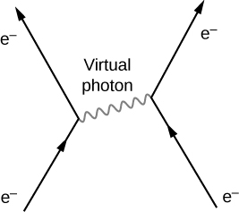

Describe the Standard Model in terms of the four fundamental forces and exchange particles
Draw a Feynman diagram for a simple particle interaction
Use Heisenberg’s uncertainty principle to determine the range of forces described by the Standard Model
Explain the rationale behind grand unification theories
The chief intellectual activity of any scientist is the development and revision of scientific models. A particle physicist seeks to develop models of particle interactions. This work builds directly on work done on gravity and electromagnetism in the seventeenth, eighteenth, and nineteenth centuries. The ultimate goal of physics is a unified “theory of everything” that describes all particle interactions in terms of a single elegant equation and a picture. The equation itself might be complex, but many scientists suspect the idea behind the equation will make us exclaim: “How could we have missed it? It was so obvious!”
In this section, we introduce the Standard Model, which is the best current model of particle interactions. We describe the Standard Model in detail in terms of electromagnetic, weak nuclear, and strong forces. At the end of this section, we review unification theories in particle physics.
Introduction to the Standard Model
The Standard Model of particle interactions contains two ideas: electroweak theory and quantum chromodynamics (QCD) (the force acting between color charges). Electroweak theory unifies the theory of quantum electrodynamics (QED), the modern equivalent of classical electromagnetism, and the theory of weak nuclear interactions. The Standard Model combines the theory of relativity and quantum mechanics.
In the Standard Model, particle interactions occur through the exchange of bosons, the “force carriers.” For example, the electrostatic force is communicated between two positively charged particles by sending and receiving massless photons. This can occur at a theoretical infinite range. The result of these interactions is Coulomb repulsion (or attraction). Similarly, quarks bind together through the exchange of massless gluons. Leptons scatter off other leptons (or decay into lighter particles) through the exchange of massive W and Z bosons. A summary of forces as described by the Standard Model is given in [link]. The gravitational force, mediated by the exchange of massless gravitations, is added in this table for completeness but is not part of the Standard Model.
Four Forces and the Standard Model
Force
Relative strength
Exchange particle (bosons)
Particles acted upon
Range
Strong
1
Gluon
Quarks
Electromagnetic
1/137
photon
Charged particles
Weak
Z bosons
Quarks, leptons, neutrinos
Gravitational
graviton
All particles
The Standard Model can be expressed in terms of equations and diagrams. The equations are complex and are usually covered in a more advanced course in modern physics. However, the essence of the Standard Model can be captured using Feynman diagrams. A Feynman diagram, invented by American physicist Richard Feynman (1918–1988), is a space-time diagram that describes how particles move and interact. Different symbols are used for different particles. Particle interactions in one dimension are shown as a time-position graph (not a position-time graph). As an example, consider the scattering of an electron and electron-neutrino ([link]). The electron moves toward positive values of x (to the right) and collides with an electron neutrino moving to the left. The electron exchanges a Z boson (charge zero). The electron scatters to the left and the neutrino scatters to the right. This exchange is not instantaneous. The Z boson travels from one particle to the other over a short period of time. The interaction of the electron and neutrino is said to occur via the weak nuclear force. This force cannot be explained by classical electromagnetism because the charge of the neutrino is zero. The weak nuclear force is discussed again later in this section.
In this Feynman diagram, the exchange of a virtual carries the weak nuclear force between an electron and a neutrino.
Electromagnetic Force
According to QED, the electromagnetic force is transmitted between charged particles through the exchange of photons. The theory is based on three basic processes: An electron travels from one place to the next, emits or absorbs a photon, and travels from one place to another again. When two electrons interact, one electron emits the photon and the other receives it ([link]). Photons transfer energy and momentum from one electron to the other. The net result in this case is a repulsive force. The photons exchanged are virtual. A virtual particle is a particle that exists for too short a time to be observable. Since the photon transit time is extremely small, Heisenberg’s uncertainty principle states that the uncertainty in the photon’s energy, may be very large.
Feynman diagram of two electrons interacting through the exchange of a photon.

To estimate the range of the electromagnetic interaction, assume that the uncertainty on the energy is comparable to the energy of the photon itself, written
The Heisenberg uncertainly principle states that
Combining these equations, we have
The energy of a photon is given by , so
The distance d that the photon can move in this time is therefore
The energy of the virtual photon can be arbitrarily small, so its wavelength can be arbitrarily large—in principle, even infinitely large. The electromagnetic force is therefore a long-range force.
Weak Nuclear Force
The weak nuclear force is responsible for radioactive decay. The range of the weak nuclear force is very short (only about m) and like the other forces in the Standard Model, the weak force can be described in terms of particle exchange. (There is no simple function like the Coulomb force to describe these interactions.) The particle exchanged is one of three bosons: and . The Standard Model predicts the existence of these spin-1 particles and also predicts their specific masses. In combination with previous experiments, the mass of the charged W bosons was predicted to be and that of the was predicted to be . A CERN experiment discovered particles in the 1980s with precisely these masses—an impressive victory for the model.
The weak nuclear force is most frequently associated with scattering and decays of unstable particles to light particles. For example, neutrons decay to protons through the weak nuclear force. This reaction is written
where n is the neutron, p is a proton, is an electron, and is a nearly massless electron neutrino. This process, called beta decay, is important in many physical processes. A Feynman diagram of beta decay is given in [link](a). The neutron emits a and becomes a proton, then the produces an electron and an antineutrino. This process is similar to the scattering event
In this process, the proton emits a and is converted into a neutron (b). The then combines with the electron, forming a neutrino. Other electroweak interactions are considered in the exercises.
Feynman diagram of particles interacting through the exchange of a W boson: (a) beta decay; (b) conversion of a proton into a neutron.
The range of the weak nuclear force can be estimated with an argument similar to the one before. Assuming the uncertainty on the energy is comparable to the energy of the exchange particle by we have
The maximum distance d that the exchange particle can travel (assuming it moves at a speed close to c) is therefore
For one of the charged vector bosons with we obtain Hence, the range of the force mediated by this boson is
Strong Nuclear Force
Strong nuclear interactions describe interactions between quarks. Details of these interactions are described by QCD. According to this theory, quarks bind together by sending and receiving gluons. Just as quarks carry electric charge [either or that determines the strength of electromagnetic interactions between the quarks, quarks also carry “color charge” (either red, blue, or green) that determines the strength of strong nuclear interactions. As discussed before, quarks bind together in groups in color neutral (or “white”) combinations, such as red-blue-green and red-antired.
Interestingly, the gluons themselves carry color charge. Eight known gluons exist: six that carry a color and anticolor, and two that are color neutral ([link](a)). To illustrate the interaction between quarks through the exchange of charged gluons, consider the Feynman diagram in part (b). As time increases, a red down quark moves right and a green strange quark moves left. (These appear at the lower edge of the graph.) The up quark exchanges a red-antigreen gluon with the strange quark. (Anticolors are shown as secondary colors. For example, antired is represented by cyan because cyan mixes with red to form white light.) According to QCD, all interactions in this process—identified with the vertices—must be color neutral. Therefore, the down quark transforms from red to green, and the strange quark transforms from green to red.
(a) Eight types of gluons carry the strong nuclear force. The white gluons are mixtures of color-anticolor pairs. (b) An interaction between two quarks through the exchange of a gluon.
As suggested by this example, the interaction between quarks in an atomic nucleus can be very complicated. [link] shows the interaction between a proton and neutron. Notice that the proton converts into a neutron and the neutron converts into a proton during the interaction. The presence of quark-antiquark pairs in the exchange suggest that bonding between nucleons can be modeled as an exchange of pions.
A Feynman diagram that describes a strong nuclear interaction between a proton and a neutron.
In practice, QCD predictions are difficult to produce. This difficulty arises from the inherent strength of the force and the inability to neglect terms in the equations. Thus, QCD calculations are often performed with the aid of supercomputers. The existence of gluons is supported by electron-nucleon scattering experiments. The estimated quark momenta implied by these scattering events are much smaller than we would expect without gluons because the gluons carry away some of the momentum of each collision.
Unification Theories
Physicists have long known that the strength of an interaction between particles depends on the distance of the interaction. For example, two positively charged particles experience a larger repulsive force at a short distance then at a long distance. In scattering experiments, the strength of an interaction depends on the energy of the interacting particle, since larger energy implies both closer and stronger interactions.
Particle physicists now suspect that the strength of all particle interactions (the four forces) merge at high energies, and the details of particle interactions at these energies can be described in terms of a single force ([link]). A unified theory describes what these interactions are like and explains why this description breaks down at low-energy scales. A grand unified theory is a theory that attempts to describe strong and electroweak interaction in terms of just one force. A theory of everything (TOE) takes the unification concept one step further. A TOE combines all four fundamental forces (including gravity) into one theory.
Grand unification of forces at high energies.
Summary
The Standard Model describes interactions between particles through the strong nuclear, electromagnetic, and weak nuclear forces.
Particle interactions are represented by Feynman diagrams. A Feynman diagram represents interactions between particles on a space-time graph.
Electromagnetic forces act over a long range, but strong and weak forces act over a short range. These forces are transmitted between particles by sending and receiving bosons.
Grand unified theories seek an understanding of the universe in terms of just one force.
Conceptual Questions
What is the Standard Model? Express your answer in terms of the four fundamental forces and exchange particles.
The Standard Model is a model of elementary particle interactions. This model contains the electroweak theory and quantum chromodynamics (QCD). It describes the interaction of leptons and quarks though the exchange of photons (electromagnetism) and bosons (weak theory), and the interaction of quark through the exchange of gluons (QCD). This model does not describe gravitational interactions.
Draw a Feynman diagram to represents annihilation of an electron and positron into a photon.
What is the motivation behind grand unification theories?
To explain particle interactions that involve the strong nuclear, electromagnetic, and weak nuclear forces in a unified way.
If a theory is developed that unifies all four forces, will it still be correct to say that the orbit of the Moon is determined by the gravitational force? Explain why.
If the Higgs boson is discovered and found to have mass, will it be considered the ultimate carrier of the weak force? Explain your response.
No, however it will explain why the W and Z bosons are massive (since the Higgs “imparts” mass to these particles), and therefore why the weak force is short ranged.
One of the common decay modes of the Even though only hadrons are involved in this decay, it occurs through the weak nuclear force. How do we know that this decay does not occur through the strong nuclear force?
Problems
Using the Heisenberg uncertainly principle, determine the range of the weak force if this force is produced by the exchange of a Z boson.
Use the Heisenberg uncertainly principle to estimate the range of a weak nuclear decay involving a graviton.
The graviton is massless, so like the photon is associated with a force of infinite range.
(a) The following decay is mediated by the electroweak force:
Draw the Feynman diagram for the decay.
(b) The following scattering is mediated by the electroweak force:
Draw the Feynman diagram for the scattering.
Assuming conservation of momentum, what is the energy of each ray produced in the decay of a neutral pion at rest, in the reaction
?
67.5 MeV
What is the wavelength of a 50-GeV electron, which is produced at SLAC? This provides an idea of the limit to the detail it can probe.
The primary decay mode for the negative pion is (a) What is the energy release in MeV in this decay? (b) Using conservation of momentum, how much energy does each of the decay products receive, given the is at rest when it decays? You may assume the muon antineutrino is massless and has momentum , just like a photon.
a. 33.9 MeV; b. By conservation of momentum, . By conservation of energy,
Suppose you are designing a proton decay experiment and you can detect 50 percent of the proton decays in a tank of water. (a) How many kilograms of water would you need to see one decay per month, assuming a lifetime of (b) How many cubic meters of water is this? (c) If the actual lifetime is , how long would you have to wait on an average to see a single proton decay?
Glossary
Feynman diagram
space-time diagram that describes how particles move and interact
quantum chromodynamics (QCD)
theory that describes strong interactions between quarks
quantum electrodynamics (QED)
theory that describes the interaction of electrons with photons
Standard Model
model of particle interactions that contains the electroweak theory and quantum chromodynamics (QCD)
virtual particle
particle that exists for too short of time to be observable
![Figure is a graph of t versus x. An arrow labeled e minus goes up and right and meets the base of another arrow labeled e minus going up and left. The junction is labeled z0 boson emitted from an electron. To the right of this is an arrow going up and left. The tip meets the base of another arrow going up and right. Both these are labeled v subscript e and the junction is labeled z0 boson absorbed by an electron neutrino. The two junctions on the graph are connected by a ray labeled z0. This points right and slightly up.](CNX_UPhysics_44_05_Z0.jpg)
![Figure a shows four arrows. One arrow, labeled n, points up and its tip meets the base of another arrow going up and left, labeled p. To the right of this is an arrow labeled e minus pointing up. Its base is connected to the base of another arrow going up and right. This is labeled v bar subscript e. The two junctions on the graph are connected by a wavy line labeled W minus. This points up and right. Figure b shows four arrows. One arrow, labeled p, points up and right. Its tip meets the base of another arrow going up and left, labeled n. To the right of this is an arrow labeled e minus pointing up and left. Its tip meets the base of another arrow going up and right. This is labeled v subscript e. The two junctions on the graph are connected by a wavy line labeled W plus. This points up and right.](CNX_UPhysics_44_05_FeynEW.jpg)
![Figure a shows 8 circles in a row. The last two circles are white. The top and bottom halves of each of the first six circles are different in color. The top halves are labeled color and the bottom halves are labeled anticolor. The top and bottom halves of each circle from left to right are as follows: first: red labeled R and magenta labeled G bar, second: green labeled G and cyan labeled R bar, third: blue labeled B and cyan labeled R bar, fourth: red labeled R and yellow labeled B bar, fifth: green labeled G and yellow labeled B bar, sixth: blue labeled B and magenta labeled G bar. Figure b is a graph of t versus x. An arrow going up and right is labeled R. Its tip meets the base of arrow G, which points up and left. The junction is labeled from R to R plus R G bar. To the right of these is an arrow G pointing up and left. Its tip meets the base of arrow R. The junction is labeled from RG bar plus G to R. The two junctions are connected by an arrow pointing right. Along the arrow is a circle labeled RG bar.](CNX_UPhysics_44_05_Gluon.jpg)
![At the top left of the figure is a circle labeled neutron. Within it are three smaller circles labeled d, u, d. At the top right corner is a circle labeled proton. Within it are three circles labeled u, d, u. At the bottom right is a circle labeled neutron. Within it are three circles labeled d, d, u. At the bottom left is a circle labeled proton. Within it are three circles labeled d, u, u. Lines from d, and u in the bottom left proton connect to the d and u in the top left neutron. Lines from the d and u in the bottom right neutron connect to those in the top right proton. A line from the u in the bottom left proton connects to the u in the top right proton. In the middle of this connecting line, the u pairs with another circle, which is labeled d bar. This pair is labeled pi plus. Pointing to the circle labeled d bar from the left is an arrow, whose base is labeled d plus d bar created. A line from the base of the arrow connects to the d in the top left neutron. To the right of the circle labeled d bar is a line, the endpoint of which is labeled d plus d bar annihilate. A line connects the d in the bottom right neutron to it. Wavy lines are shown between all connecting lines.](CNX_UPhysics_44_05_NukeQuarks.jpg)
![Graph of Force Strength versus Energy in GeV. A curve labeled strong slopes down and right. A point on the curve with an x value of 10 to the power 19 is labeled TOE. A curve labeled gravity branches out from here, going down and left. A point on the strong curve, with an x value of 10 to the power 15 is labeled GUT. A curve going left branches out from here. It is labeled Electroweak. This branches into two at a point with an x value of 100. The branch going left is labeled EM and the one going down and left is labeled weak.](CNX_UPhysics_44_05_GUT.jpg)